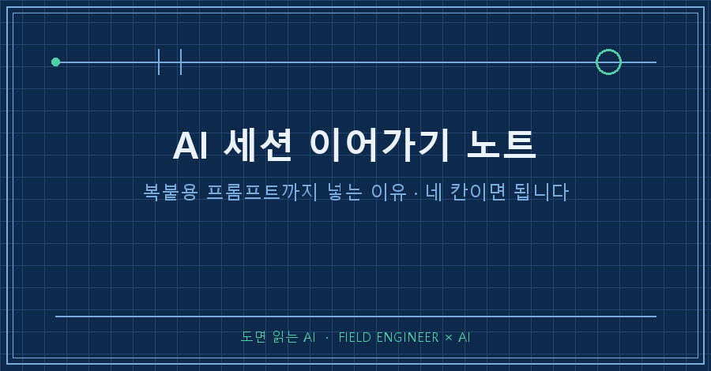
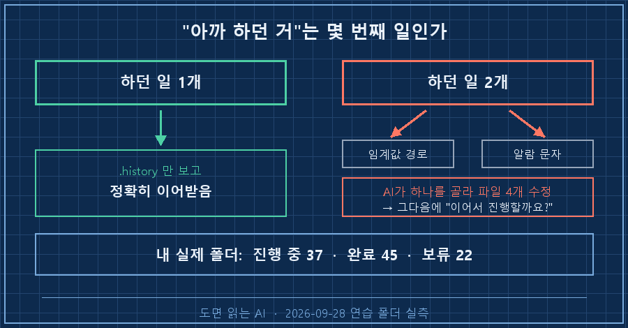
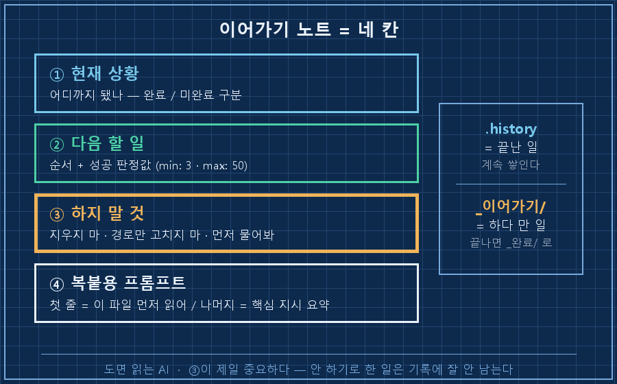
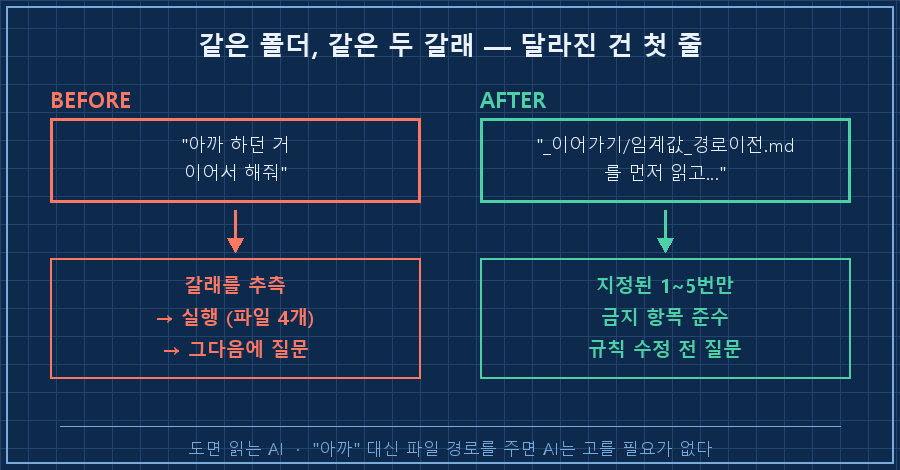
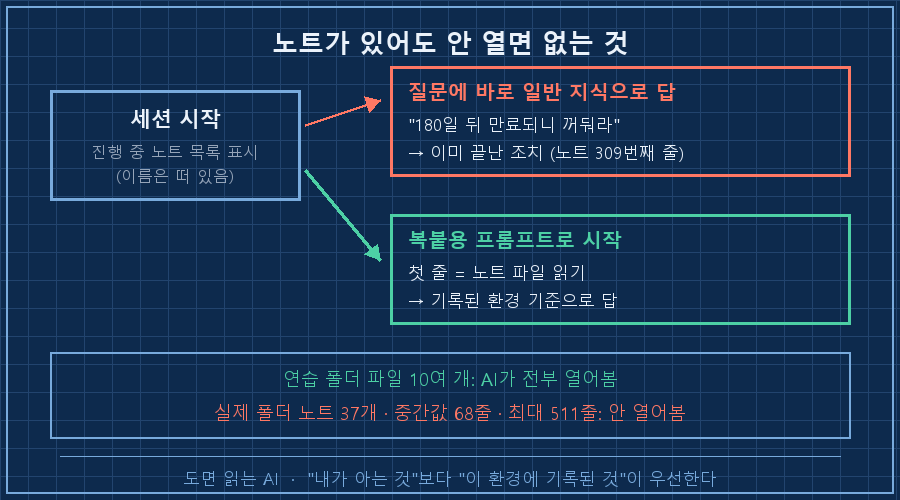

AI 세션 이어가기는 파일 하나로 됩니다. 세션을 닫기 전에 "현재 상황 / 다음 할 일 / 하지 말 것 / 복붙용 프롬프트" 네 칸짜리 노트를 AI에게 쓰게 하고, 다음 날 새 창에 그 프롬프트를 그대로 붙여넣으면 끝이에요. 핵심은 마지막 칸입니다. "아까 하던 거 이어서 해줘"라고 치면, 하던 일이 두 갈래 이상일 때 AI가 알아서 하나를 골라 실행해버리거든요.
지난 편에서 .history 폴더에 끝난 일을 남기는 법을 만들었죠. 이번 편은 하다 만 일을 받는 파일입니다. 둘은 역할이 달라요.
현장 엔지니어로 15년째 일하고, 퇴근하고 나면 개인 자동화를 AI랑 굴립니다. 아래 출력은 2026년 9월 28일 연습 폴더에서 Claude Code로 직접 돌린 화면 그대로예요. 실험 조건을 깨끗하게 하려고 AI 자동 메모리는 꺼두고 돌렸습니다.
1. 하던 일이 하나뿐이면 노트 없이도 이어집니다
먼저 반대 결과부터 말씀드릴게요. 제 예상이 틀렸거든요.
지난 편 연습 폴더를 복사해서, 첫 세션에 일을 반만 시켰습니다.
> 임계값 파일 3개를 thresholds/ 폴더로 옮기고, 그걸 읽는 스크립트 경로를
고치는 작업을 하자. 오늘은 시간이 없어서 파일 이동하고 check_level.py
하나만 고친 다음 멈춰.그리고 같은 세션에서 말로만 방침 하나를 정했어요. "온도 센서를 바꿔서 check_temp.py는 경로만 고치면 안 된다, th_temp_v2.json을 새로 만들어 읽게 하고 기존 파일은 지우지 마라." 창을 닫고, 새 세션에서 딱 한 줄 쳤습니다.
> 아까 하던 거 이어서 해줘
이 세션에는 이전 대화 내용이 남아 있지 않아서 `.history` 기록을 보고
이어서 했습니다.
- scripts/check_temp.py: 경로만 고치지 않고, 온도 센서 교체 방침대로
새로 만든 thresholds/th_temp_v2.json(max_C = 50)을 읽게 했습니다.제대로 이어받았습니다. 지난 편 규칙("구조를 바꾸면 .history에 남긴다") 덕분에 첫 세션이 말로 정한 방침까지 기록해뒀더라고요. 기록이 잘 돼 있고 하던 일이 하나뿐이면, .history만으로 충분합니다. 굳이 파일을 하나 더 만들 필요가 없어요.
문제는 하던 일이 둘일 때였습니다.
2. 두 갈래가 되자, AI가 하나를 골라 실행했어요
같은 폴더에 다른 작업 기록을 하나 더 넣었습니다. "알람 문자 발송 1차 — 뼈대만 짜고, 문자 서비스 연동은 다음 작업." 파일 시각으로는 이쪽이 더 최근이에요. 그리고 똑같이 쳤습니다.
> 아까 하던 거 이어서 해줘
`.history`에 남아 있던 다음 작업, 즉 임계값 파일 경로 수정과 온도
임계값 v2 적용을 끝냈습니다.
...
**다음 작업:** 알람 문자 발송입니다. 이어서 진행할까요?묻지 않고 하나를 골라서, 파일 4개를 바꾼 다음에 나머지 하나를 물어봤습니다. 이번엔 운 좋게 제가 원하던 쪽이었지만, 제가 말한 "아까"가 알람 쪽이었다면 엉뚱한 파일 4개가 바뀐 거죠..
AI 잘못이라고 보긴 어려워요. "아까"라는 말에 답이 없으니까요. 사람한테 인수인계하면서 "아까 그거 해줘"라고 하지 않잖아요. 그런데 AI한테는 매일 그렇게 하고 있었던 겁니다.
제 실제 작업 폴더는 두 갈래 정도가 아닙니다. 오늘 세어보니 진행 중인 이어가기 노트가 37개예요. 끝나서 _완료/로 옮긴 게 45개, 잠시 멈춘 _보류/가 22개고요. 5월 6일에 이 체계를 만들 때 기록에 이렇게 적어뒀습니다. "세션 중단 시 미완료 작업이 유실되는 문제." 그리고 한 줄 더. "과거 히스토리에서 중단 작업 역추적은 불가 → 지금부터 적용." 그전에 끊긴 일들은 결국 못 살렸어요.

3. 세션 닫기 전에, 네 칸짜리 노트를 쓰게 합니다
그래서 세션을 닫기 전에 이렇게 시킵니다. 형식을 제가 정해주는 게 포인트예요.
> 세션 닫기 전에 이어가기 노트 하나 써줘. 위치는 _이어가기/임계값_경로이전.md.
칸은 네 개: 현재 상황 / 다음 할 일 / 하지 말 것 / 복붙용 프롬프트.
복붙용 프롬프트는 내가 내일 새 창에 그대로 붙여넣을 문장이야.
이 파일만 보고도 너 없이 이어받을 수 있게 써.AI가 만든 노트를 줄여서 보여드리면 이렇습니다.
# 이어가기: 임계값 파일 thresholds/ 이전
## 현재 상황
- 임계값 파일 3개를 thresholds/ 로 옮겼음 (완료)
- check_level.py: 고쳤고 실행해서 low: 200 high: 1800 확인 (완료)
- check_flow.py, check_temp.py: 아직 루트 경로를 읽음. 지금 실행하면 FileNotFoundError
## 다음 할 일
1. check_flow.py 경로를 thresholds/th_flow.json 으로 (확인: min: 3)
2. thresholds/th_temp_v2.json 을 {"max_C":50} 으로 새로 만든다
3. check_temp.py 가 v2 를 읽게 한다 (확인: max: 50)
4. 스크립트 3개 전부 다시 실행
5. .history 기록 하나 남기기
## 하지 말 것
- thresholds/th_temp.json (max_C 45) 은 지우지 말 것
- check_temp.py 를 "경로만" 고치지 말 것. v2 파일을 읽어야 함
- CLAUDE.md 에 thresholds/ 경로가 빠진 문제는 먼저 물어볼 것
## 복붙용 프롬프트
_이어가기/임계값_경로이전.md 를 먼저 읽고 "다음 할 일" 1~5번을 진행해줘.
요약하면: check_flow.py 는 경로만 고치고, th_temp_v2.json 을 {"max_C":50}
으로 새로 만든 다음 check_temp.py 가 그걸 읽게 해줘.
기존 th_temp.json 은 절대 지우지 마.
CLAUDE.md 의 thresholds/ 경로 문제는 고치지 말고 나한테 먼저 물어봐.칸마다 하는 일이 다릅니다.
| 칸 | 답하는 질문 | 빠지면 생기는 일 |
|---|---|---|
| 현재 상황 | 어디까지 됐나 | 끝난 걸 또 하거나, 된 줄 알고 넘어감 |
| 다음 할 일 | 뭘 어떤 순서로, 뭐가 나오면 성공인가 | 순서를 AI가 새로 정함 |
| 하지 말 것 | 건드리면 안 되는 것 | "정리"하다가 지우면 안 될 걸 지움 |
| 복붙용 프롬프트 | 내일 첫 줄에 뭘 칠까 | "아까 하던 거"로 돌아감 |
제가 제일 아끼는 칸은 하지 말 것이에요. .history에는 한 일이 남지만, "안 하기로 한 일"은 잘 안 남거든요. 그리고 AI는 기본적으로 부지런해서, 눈에 띄는 걸 고쳐주려고 합니다.
AI가 노트를 쓰면서 한 말 중에 이 대목이 좋았어요. "노트를 읽지 않더라도 핵심 지시가 빠지지 않게 문장 안에 직접 넣었습니다." 복붙용 프롬프트에 "파일 먼저 읽어"만 적지 않고 핵심 세 줄을 같이 박아둔 이유가 이겁니다.

4. AI 세션 이어가기, 복붙용 프롬프트 한 줄로 다시 돌려봤습니다
2번과 똑같은 두 갈래 상태(알람 문자 기록까지 있는 폴더)로 되돌려놓고, 이번엔 "아까 하던 거" 대신 노트의 복붙용 프롬프트를 그대로 붙여넣었습니다.
"다음 할 일" 1~5번을 모두 끝냈고, 프로젝트 루트에서 스크립트 3개가
에러 없이 실행되는 것까지 확인했습니다.
$ python scripts/check_level.py
low: 200 high: 1800
$ python scripts/check_flow.py
min: 3
$ python scripts/check_temp.py
max: 50
## 여쭤볼 것
CLAUDE.md에 thresholds/ 경로가 빠져 있습니다. ... 지시하신 대로
고치지 않았습니다. 규칙 3번을 예를 들어 아래처럼 바꿔도 될까요?알람 쪽은 건드리지 않았고, 기존 파일도 안 지웠고, 고치지 말라고 한 규칙 파일은 고치기 전에 물어봤습니다. 덤으로 이런 줄도 붙여왔어요. "이어가기 문서에는 프로젝트 루트가 sandbox-ep06로 적혀 있지만, 실제 작업은 지금 폴더인 ep06-C에서 했습니다." 실험하려고 폴더를 복사해서 돌렸는데 그것까지 짚더라고요.
"아까"라는 말 대신 파일 경로를 주면, 몇 갈래가 있든 AI는 고를 필요가 없습니다. 복붙용 프롬프트를 넣는 이유는 딱 이거예요. 여러분은 어제 하다 만 일, 오늘 첫 줄에 뭐라고 치셨나요?

5. 노트가 있어도 안 열면 없는 것 — 제가 실제로 당한 일
여기까지만 보면 노트만 있으면 될 것 같죠. 저도 그렇게 믿었습니다. 9월 22일 전까지는요.
그날 노트북 원격 접속 도구 설정을 AI한테 물었어요. 답이 바로 왔습니다. "노드 인증키가 기본 180일 뒤 만료되니 관리 콘솔에서 꺼둬라." 그럴듯하죠. 그런데 이미 꺼져 있었습니다. 그것도 제 이어가기 노트 309번째 줄에 이렇게 적혀 있었어요.
- **키 만료 비활성화 완료** — (기기 3대 이름, 여기선 생략)심지어 그 세션을 시작할 때 이어가기 목록에 그 노트 이름이 떠 있었습니다. 저는 세션이 열리면 진행 중인 노트 목록이 자동으로 뜨게 해뒀거든요. AI는 목록을 보고도 파일을 안 열고 일반 지식으로 답했습니다. 제가 콘솔에 들어가서 헛손질하기 직전에 잡았어요..
그날 기록에 남긴 교훈은 한 줄입니다. "내가 아는 것"보다 "이 환경에 기록된 것"이 우선한다. 제 장비는 기본값과 다르게 세팅돼 있는 게 정상이고, 그 차이가 곧 노트에 쌓인 자산이에요. 일반 지식으로 답하면 그 자산이 매번 0으로 돌아갑니다.
재밌는 건, 연습 폴더에서 같은 상황을 재현하려고 노트를 안 가리키는 질문("check_temp.py 돌리면 에러 나. 고쳐줘")을 던졌더니 이번엔 잘 됐다는 거예요. 도구 호출 로그를 보니 파일을 전부 열어봤더라고요. 파일이 열 개 남짓이니까요. 제 실제 폴더는 진행 중 노트만 37개, 중간값이 68줄, 제일 긴 게 511줄입니다. 전부 여는 게 안 되는 크기예요.
그래서 두 가지를 바꿨습니다.
1. 이어받을 땐 무조건 복붙용 프롬프트로 시작한다. 첫 줄이 "이 파일 먼저 읽어"라서, 읽을지 말지를 AI가 판단할 틈이 없습니다.
2. AI가 매 세션 읽는 규칙 메모에 한 줄 추가. "진행 중인 노트가 있는 주제는 답하기 전에 그 노트를 먼저 연다." 그리고 그 사고 자체를 해당 노트 안에 적어뒀어요. 다음 세션이 같은 함정에 빠지지 않게요.

6. 도구가 달라도 같고, 헷갈리는 것 세 가지
AI 세션 이어가기에 쓴 건 텍스트 파일과 폴더 하나뿐이라 도구를 안 탑니다. Codex CLI(GPT)나 Gemini CLI에서도 같은 방식으로 됩니다. 규칙 파일 이름만 AGENTS.md, GEMINI.md로 바뀌고, 노트 폴더와 복붙용 프롬프트는 그대로 씁니다. 도구를 갈아타도 노트는 따라옵니다.
규칙 파일에 얹을 줄은 이 정도면 됩니다.
## 이어가기
- "여기까지만", "내일 이어하자" 하면 _이어가기/주제.md 를 쓴다
(칸: 현재 상황 / 다음 할 일 / 하지 말 것 / 복붙용 프롬프트)
- 진행 중인 노트가 있는 주제는 답하기 전에 그 노트를 먼저 연다
- 끝난 노트는 지우지 말고 _완료/ 로 옮긴다Q. 대화 자체를 되살리는 기능(--resume)이 있는데 굳이 노트가 필요한가요?
대화 재개는 그 대화를 통째로 다시 싣는 거라, 길어진 세션일수록 무겁고 그 PC에서만 됩니다. 노트는 요점만 담은 텍스트라 다른 도구, 다른 컴퓨터, 폰에서도 열려요. 저는 둘 다 쓰되, 다음 날 이어받는 건 노트로 합니다.
Q. .history랑 뭐가 달라요? 하나로 합치면 안 되나요?
.history는 끝난 일의 기록이라 계속 쌓이고, 이어가기 노트는 하다 만 일이라 끝나면 _완료/로 빠집니다. 수명이 달라요. 5월에 체계를 만들 때도 "고정 문서 1개 방식"은 여러 안건이 섞인다는 이유로 기각하고, 주제당 파일 하나로 갔습니다.
Q. 노트가 너무 길어지면요?
길어집니다. 제 원격 접속 노트가 437줄이에요. 그래서 맨 위에 상태 세 줄, 맨 아래에 복붙용 프롬프트를 둡니다. 사람은 위만 보고, AI는 프롬프트가 시키는 대로 전체를 읽으면 되니까요.
다음 편부터는 3단계로 넘어갑니다. 기록과 노트가 쌓이면 그 안에 좋은 답이 묻히기 시작하는데, 그걸 지식으로 끌어올리는 기준을 다룰게요. 오늘은 세션 닫기 전에 "이어가기 노트 써줘" 한 줄만 쳐보세요!
끊겨도 이어지는 작업 방식은 makefield.ai에 계속 모아두고 있어요.
태그: #AI세션이어가기 #클로드코드이어서작업 #AI인수인계파일 #복붙용프롬프트 #이어가기노트 #AI작업연속성 #클로드코드resume #클로드코드CLAUDEmd #AGENTSmd #클로드코드 #ClaudeCode #CodexCLI #GeminiCLI #비개발자AI #도면읽는AI